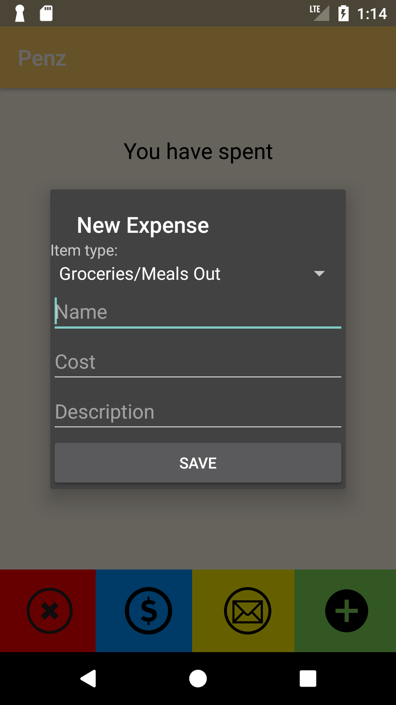
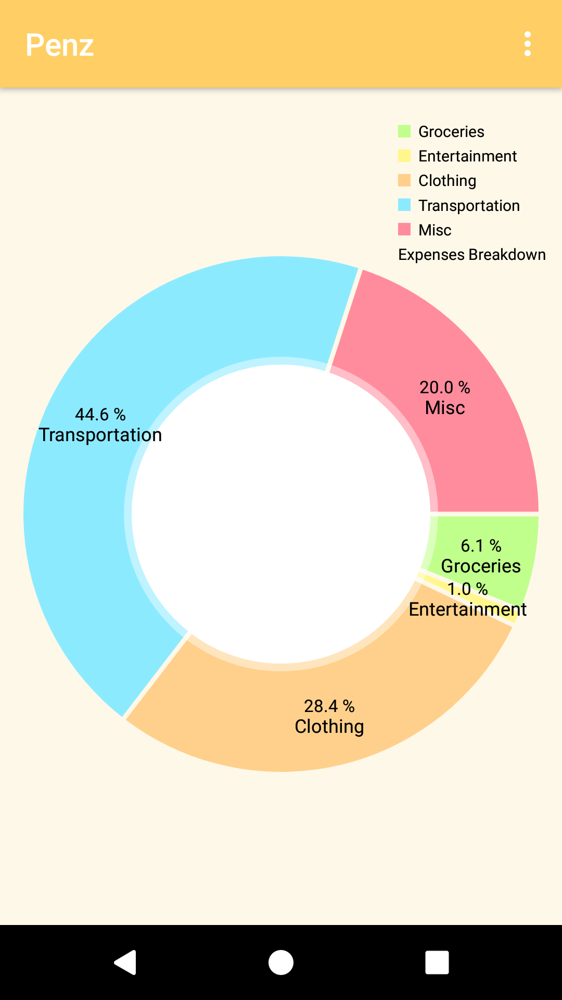
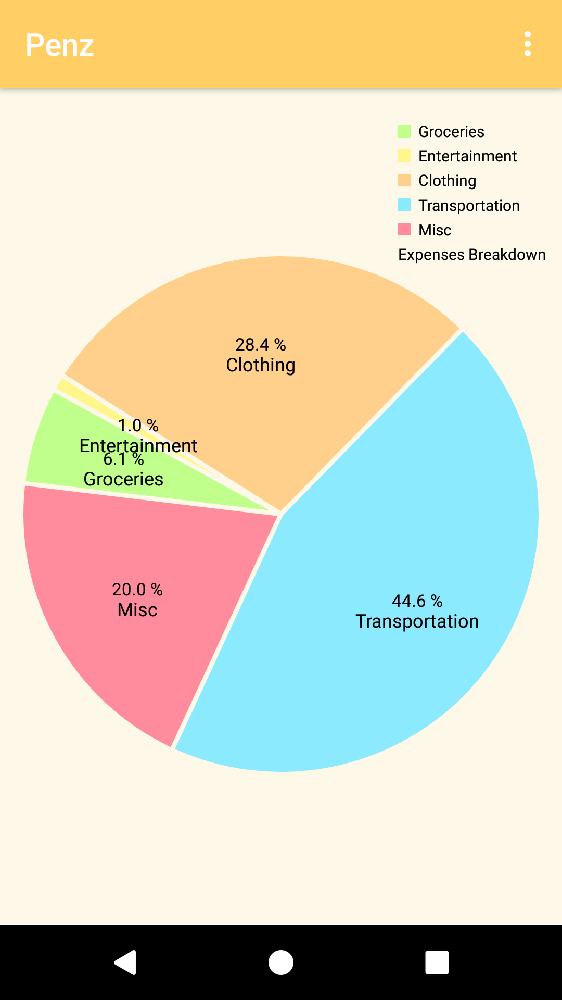
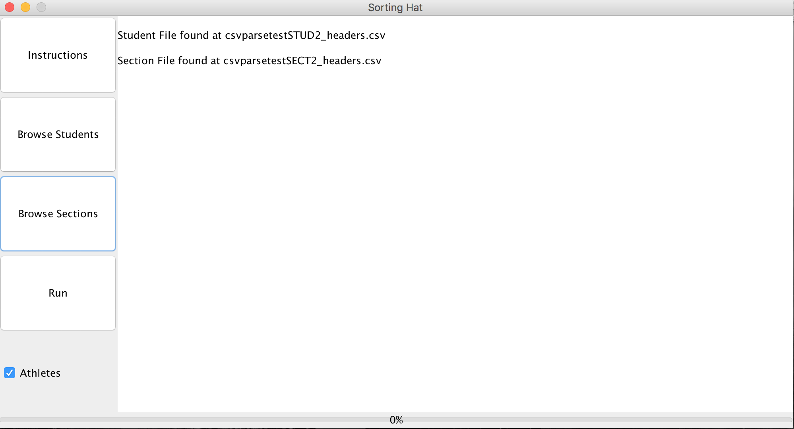

Designs
I enjoy exploring different aspects of software engineering, including AI, web development, mobile development, cloud computing, and so on.
Here are some of my favorite projects that I am working/have worked on:
Text-to-Speech Converter
Link to the application can be found here.
This project uses AWS services, and is one of my favorite AWS projects thus far! I was inspired to create this through my habit of listening to podcasts. With this, I can convert any books or study material or anything in general into audio, and can listen to them throughout the day.
This project uses S3, DynamoDB, Lambda, SNS, Polly, and API Gateway. For sending posts, the user interacts with the static website on S3, and any information is received by the RESTful web service exposed by Amazon API Gateway. The API Gateway triggers a lambda function, which creates an entry in DynamoDB, and sends an SNS notification to a second lambda. The second lambda function communicates with Polly to convert the text to audio, places the audio file into an S3 bucket, and updates the DynamoDB table.
For getting posts, the user interacts with the static website on S3, and any information is received by the RESTful web service exposed by Amazon API Gateway. The API Gateway tiggers a lambda function which retrieves information about the post (including the reference to Amazon S3) from the DynamoDB table.
Budget Tracker
This is my favorite Android project! It is an application that allows me to log and email my expenses to my parents every month. Prior to creating the application, I would always key my expenses on my phone before entering it onto my computer. This was tedious and the information would sometimes get lost in translation.
As I was studying abroad in Budapest for a semester, the application I built automatically converted the recorded transactions into US dollars, simplifying the conversion process. It also allowed users to create visuals / charts of their expenditure. That was definitely one of the key moments where I was encouraged to use my passion to create to solve an everyday problem.
- Ability to enter income, expenditure into categories
- View list of expenditures
- Visualize the categories in a pie chart and toggle different views
- Email expenditures
- Convert expenditures from any currency to any currency using the latest rates
- A splash screen of the app logo
Main Screen and list of expenditures


Adding an expenditure and converting currencies
 
Pie chart views
Sorting Hat
Sorting Hat is a Java program created by my team to allocate first year students into their respective mandatory first year classes at Lewis & Clark College. This was a team project, consisting of Mack Beveridge, Maxwell Levin, James Tostado, Sam Peers Nitzberg, and Lars Mayrand. With this program, the college's staff can perform the task within minutes, whereas manually it would have taken them over a week.
The program uses a modified Hungarian algorithm that takes a cost matrix of variables such as student preferences, sport, gender, etc. Using the GUI, the user would input CSV files for the data to be parsed. The results are outputted into a CSV file, and a report is generated on the GUI. The program takes milliseconds to complete, and on average, 92% of students get into their top 3 choices.
- Modified Hungarian Algorithm for optimized runtime
- Multi-variable sort (6 preferences, athlete status, gender, previous professor status)
- Error handling (Checks for human error including presence of headers, duplicated students, duplicated courses, etc)
- Headers are hyperparameters (can vary in terms of text)
- Generates a report (Shows success percentages, program efficiency, etc)

Instructions are available for users

Uploaded necessary files using the buttons on the left

Program ran successfully! Report generated on GUI, and output CSV file is created
CIFAR-10 Analysis
This is my first AI project using TensorFlow. I used TensorFlow to analyze the CIFAR-10 images. I had 5 hidden layers and pooling layers, and used softmax cross enthropy with logits. The learning rate was 0.001, and I did this for 50 epochs. Besides that, I had a seperate python script that allowed me to visualize the individual image of choice.
I measured the accuracy and best loss for the training and validation sets. The final accuracy was around 65-70%. In the future, I hope to improve the AI by transforming, rotating, and inversing the image. I hope to achieve an accuracy of over 90%!
Graph showing the accuracy of the training and validation sets
Breakout
Breakout is the class 1970s arcade game where the player has to make a ball break through layers of bricks to get through to the other side. I built this because I was very interested in making AIs that could win games. I had help from a Udemy course to accomplish this.
I made an AI using the powerful Asynchronous Advantage Actor Critic (A3C) reinforcement learning algorithm. This algorithm basically allowed the AI to know what the direction of the ball is at a given time and in the past, to better predict what the AI should do with the bar. The AI has 4 layers and an LSTM layer. The AI would play the game, and save its performance in the form of videos.
The AI's first, middle, and final attempt